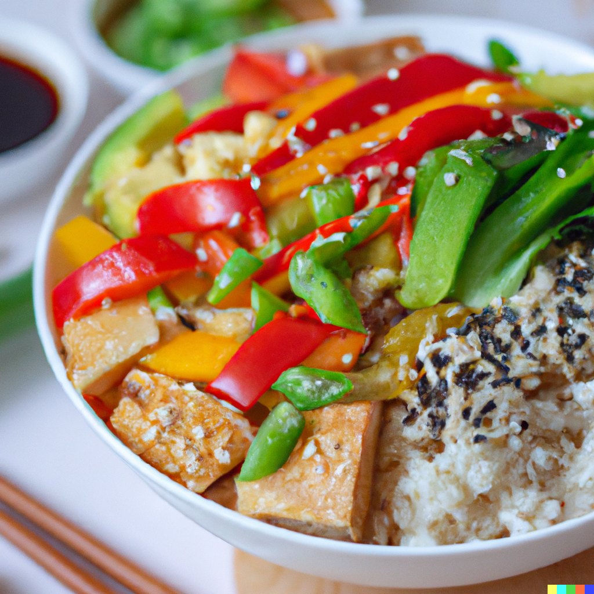

Eastern Euphoria Veggie and Tofu Treasure

Description
Experience the vibrant flavors of Asia with this vegan rice bowl. Fragrant
jasmine rice serves as the foundation for a colorful array of sautéed
mixed vegetables and crispy tofu. It's all tossed in an umami-rich blend
of soy sauce, hoisin, and a touch of sriracha for a bit of heat. Sprinkled
with sesame seeds and sliced green onions, this dish is a harmonious
balance of textures and flavors that will make your taste buds sing.
Ingredients
- 1 cup of jasmine rice
- 1 block of firm tofu, cubed
-
2 cups of mixed vegetables (broccoli, bell peppers, carrots, snow peas)
- 2 tablespoons of sesame oil
- 2 cloves of garlic, minced
- 1 tablespoon of fresh ginger, grated
- 1/4 cup of soy sauce or tamari
- 2 tablespoons of hoisin sauce
- 1 teaspoon of sriracha (optional)
- Sesame seeds and sliced green onions for garnish
Steps
-
Cook the jasmine rice according to the instructions on the package.
-
In a large pan or wok, heat the sesame oil over medium heat. Add the
tofu cubes and cook until they're browned on all sides. Remove and set
aside.
-
In the same pan, add the minced garlic and grated ginger. Cook until
fragrant.
-
Add the mixed vegetables to the pan and stir to combine. Cook until the
vegetables are tender.
-
In a small bowl, combine the soy sauce or tamari, hoisin sauce, and
sriracha. Pour this sauce over the cooked vegetables and stir to
combine.
-
Add the cooked tofu back to the pan and stir to combine with the
vegetables and sauce.
-
Divide the cooked rice into bowls, top with the tofu and vegetable
mixture, garnish with sesame seeds and green onions, and serve.